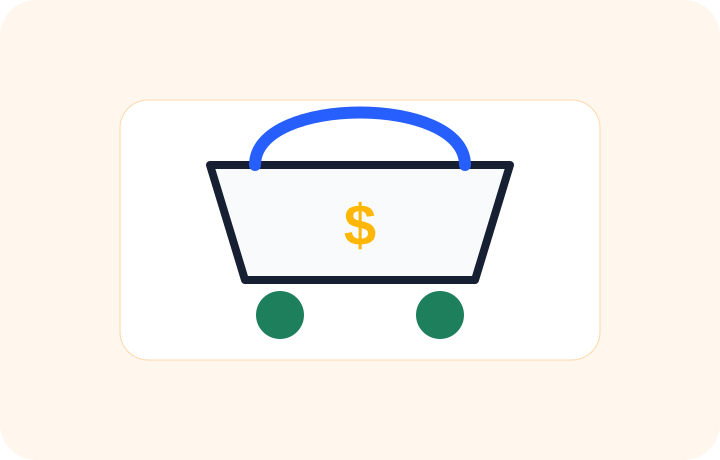

Ideas para vender productos, servicios y contenido digital usando internet y redes sociales.

Vende por Facebook Marketplace, WhatsApp Business, Instagram y grupos locales.
Productos para hogar, belleza, mascotas, organización, accesorios y artículos virales.
Ebooks, plantillas, cursos, guías, consultorías y recursos descargables.
Vender desde casa funciona mejor cuando pruebas una idea pequeña antes de invertir mucho. El objetivo inicial es validar si el producto se vende, cuánto margen deja y si el cliente vuelve a comprar.